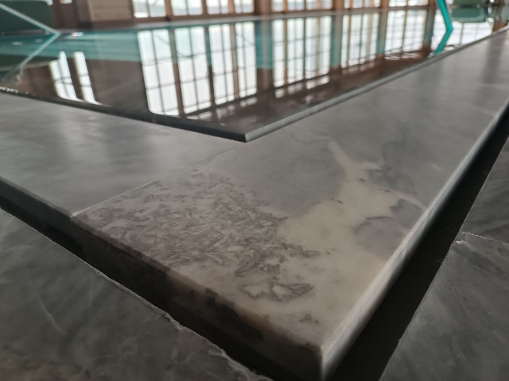

Введение
Переливной бассейн под ключ: плюсы, минусы, цена и обслуживание
Переливной бассейн — это инженерное решение, в котором вода постоянно удерживается на уровне борта и уходит в переливной лоток, создавая визуальный эффект «зеркальной поверхности». Такая система требует более точного проектирования, чем классический скиммерный бассейн, но даёт высокий уровень комфорта, эстетики и качества водообмена.

Важно понимать: переливной бассейн — это не только про внешний вид. Это полноценная инженерная система, где каждая часть влияет на стабильность работы: бетонная чаша, гидроизоляция, переливная ёмкость, фильтрация, насосное оборудование, автоматика и дальнейшее обслуживание. Ошибка в любом из этих элементов приводит к переполнению, нестабильному уровню воды или повышенным затратам на эксплуатацию.
Мы рассматриваем переливной бассейн как комплексный проект, где заранее просчитываются не только строительные решения, но и сценарий эксплуатации: частота использования, количество людей, режим фильтрации, требования к уровню шума и удобству обслуживания. Такой подход позволяет избежать переделок и делает итоговую стоимость более прогнозируемой.
Особенно важно это для частных домов: переливной бассейн должен работать стабильно и тихо, не требовать постоянного вмешательства и сохранять идеальный уровень воды в любых условиях — от ежедневного использования до сезонных нагрузок.
Для комплексного понимания темы изучите также материалы: бетонная чаша, стоимость бассейна, проектирование, обслуживание бассейна, гидроизоляция и выбор концепции перелив/скиммер.
Инженерия
Техническая часть и эксплуатация переливного бассейна
Переливной бассейн — это более сложная инженерная система по сравнению со скиммерным вариантом, где стабильность работы напрямую зависит от точности проектирования и качества исполнения всех узлов. Здесь нет «второстепенных» элементов: каждая часть влияет на уровень воды, циркуляцию и итоговую стоимость эксплуатации.
В основе системы всегда находится связка: бетонная чаша, гидроизоляция, переливной лоток, накопительная ёмкость, фильтрация и насосное оборудование. Если хотя бы один элемент рассчитан неправильно, возникают переполнения, нестабильный уровень воды или перегрузка оборудования.
На этапе проектирования важно заранее определить техническую логику объекта: где будет размещено оборудование, как организован перелив, как работает компенсационный бак и как система реагирует на изменение нагрузки (дождь, купание, испарение). Это позволяет избежать переделок и дорогостоящих корректировок после запуска.
Отдельное внимание уделяется эксплуатации. Переливной бассейн требует более точного контроля уровня воды, состояния фильтрации и работы автоматики. При грамотной настройке система работает стабильно, но при отсутствии регламента быстро уходит в разбаланс.
Смета и бюджет
Стоимость переливного бассейна формируется не только из строительных работ, но и из инженерной сложности системы. Основные факторы влияния — это размер чаши, объём компенсационного бака, тип фильтрации, уровень автоматизации и выбранные материалы отделки.
Важно учитывать, что экономия на ключевых узлах (переливной лоток, гидравлика, автоматика) приводит к росту эксплуатационных расходов. Поэтому корректный бюджет всегда рассчитывается как стоимость владения системой, а не только как цена строительства.
Такой подход позволяет заранее оценить реальные затраты, избежать скрытых расходов и получить переливной бассейн, который стабильно работает в долгосрочной перспективе.
Смета и бюджет
Как считать стоимость переливного бассейна и где возникают риски
Переливной бассейн — это инженерно сложная система, где итоговая стоимость формируется не одной позицией, а совокупностью решений. Ошибка в расчётах на любом этапе приводит либо к перерасходу бюджета, либо к проблемам в эксплуатации: нестабильный уровень воды, перегрузка оборудования или рост затрат на обслуживание.
Ниже — практическая структура, которая помогает понять, из чего складывается цена и где чаще всего возникают скрытые риски.
| Позиция | Что влияет на стоимость | Где возникают риски |
|---|---|---|
| Строительство чаши | Геометрия бассейна, тип грунта, глубина, доступ строительной техники, сложность армирования и бетонирования | Ошибки геометрии, просчёт нагрузок, сложная логистика на участке и переделки после заливки |
| Оборудование | Производительность фильтрации, насосы, система перелива, компенсационная ёмкость, подогрев | Недостаточная мощность приводит к мутной воде, избыточная — к переплате без улучшения результата |
| Автоматизация | Система дозирования химии, датчики уровня воды, удалённое управление, сценарии эксплуатации | Несовместимость оборудования и сложность настройки при отсутствии единой системы управления |
| Отделка бассейна | Материал (плитка, мозаика, камень), технология укладки, требования к гидроизоляции и условия эксплуатации | Отслоения, протечки, сложный ремонт и рост стоимости обслуживания при неправильном выборе материала |
Как формируется корректный бюджет проекта
-
01
Сбор исходных данных
Анализируется участок, архитектура дома, геология и сценарий использования бассейна: частный, семейный или коммерческий режим эксплуатации. Это основа для всех дальнейших расчётов.
-
02
Согласование технической спецификации
Подбирается оборудование и инженерные системы с учётом реальной нагрузки, режима работы и требований к обслуживанию. На этом этапе исключаются избыточные или недостаточные решения.
-
03
Формирование календарного плана реализации
Проект разбивается на логические этапы с контрольными точками: проектирование, строительство чаши, монтаж оборудования, отделка и запуск системы. Это снижает риск ошибок и перерасхода бюджета.
В переливных бассейнах особенно важно учитывать, что стоимость владения формируется не только на этапе строительства, но и в процессе эксплуатации. Поэтому правильный расчёт всегда включает обслуживание, энергоэффективность и сложность системы управления.
Практика показывает, что качество и надёжность переливного бассейна определяются не выбором отдельного материала или оборудования, а тем, насколько согласованы все этапы проекта между собой.
В единую систему должны быть связаны: проектирование, строительство чаши, монтаж оборудования, устройство гидроизоляции, отделка, настройка фильтрации, автоматизация и последующее сервисное обслуживание. Если хотя бы один этап выпадает из логики, система теряет стабильность и начинает требовать постоянных корректировок.
Коммерчески грамотный подход к реализации всегда строится на прозрачной смете и понятной структуре работ. Важно заранее видеть не только стоимость строительства, но и прогнозируемые расходы на эксплуатацию: обслуживание, энергопотребление и расход химии.
Дополнительно задаются измеримые параметры качества — прозрачность воды, стабильность pH, эффективность фильтрации и корректная работа автоматики. Это позволяет контролировать результат не визуально, а по фактическим показателям.
Для владельца такой подход означает предсказуемую эксплуатацию без скрытых затрат, снижение риска аварийных ситуаций и более низкую стоимость владения бассейном в первые годы использования.
Ошибки клиентов
Чего избегать при реализации переливного бассейна
Большинство серьёзных проблем в переливных бассейнах возникает не из-за самого типа конструкции, а из-за ошибок, допущенных на этапе проектирования и строительства. Эти ошибки часто не видны сразу, но проявляются в первые месяцы эксплуатации: нестабильный уровень воды, перегрузка оборудования, повышенные расходы на обслуживание и сложные переделки.
Ниже — ключевые критические ошибки, которых важно избегать, если цель проекта — стабильная и предсказуемая система.
-
Экономия на скрытых инженерных узлах
Гидроизоляция, закладные элементы, переливной лоток и обвязка — это основа герметичности и стабильности системы. Попытка снизить бюджет на этих узлах почти всегда приводит к протечкам, потере уровня воды и дорогостоящим ремонтам.
-
Отсутствие полноценного проекта и рабочей документации
Строительство «по месту» без точных чертежей приводит к несостыковкам инженерии, оборудования и отделки. В переливных бассейнах это критично, так как даже небольшое отклонение влияет на уровень воды и работу перелива.
-
Ошибки в расчёте технического помещения и вентиляции
Недостаточный объём, неправильная вентиляция или неудобное расположение оборудования создают повышенную влажность, ускоряют износ систем и усложняют обслуживание.
-
Покупка оборудования без гидравлического расчёта
Оборудование должно подбираться под конкретный объём бассейна и сценарий эксплуатации. Без расчёта система либо не справляется с нагрузкой, либо работает неэффективно и увеличивает эксплуатационные расходы.
Избежать этих ошибок возможно только при системном подходе, где проектирование, инженерия и строительство рассматриваются как единый процесс. В этом случае переливной бассейн работает стабильно, тихо и предсказуемо в долгосрочной перспективе.
FAQ
Частые вопросы о переливных бассейнах
Ниже собраны практические ответы на ключевые вопросы, которые чаще всего возникают у владельцев на этапе планирования и реализации переливного бассейна. Эти ответы помогают заранее понять сроки, бюджет и реальные требования к эксплуатации.
Сколько занимает реализация под ключ?
В среднем проект занимает от 3 до 6 месяцев. Срок зависит от готовности объекта (этап строительства дома), сложности инженерных решений, объёма чаши и выбранной отделки. Наиболее длительный этап — это согласование проекта и инженерии, а не сама стройка.
Можно ли снизить бюджет без потери качества?
Да, но только за счёт оптимизации отделки, архитектурных решений и уровня автоматизации. Критически важные системы — гидроизоляция, гидравлика и фильтрация — не подлежат удешевлению, так как напрямую влияют на срок службы и стабильность бассейна.
Какие документы входят в проектирование?
Полный проект включает: архитектурное решение чаши, рабочие чертежи, гидравлический расчёт, спецификацию оборудования, схему инженерных подключений и регламент будущего обслуживания. Это позволяет исключить ошибки на стройке и заранее понимать итоговую систему.
Нужно ли ежегодное обслуживание?
Да. Регулярное обслуживание поддерживает стабильное качество воды, продлевает срок службы оборудования и сохраняет гарантийные обязательства производителей. Без регламента система постепенно теряет баланс и требует более дорогих восстановительных работ.
Когда лучше заказывать расчёт стоимости?
Оптимально — на раннем этапе строительства дома или проектирования участка. Это позволяет сразу заложить техническое помещение, корректные закладные элементы и избежать дорогих переделок на этапе монтажа.
CTA
Запросить коммерческое предложение
Подготовим смету, подберем оборудование и предложим реалистичный план строительства бассейна под ключ.